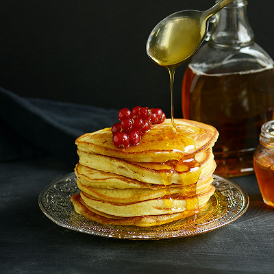

Petits-déjeuners plaisir et vitaminés le plein de vitalité dès le réveil !
Semaine trépidante ou week-end détente en vue, découvrez une sélection de recettes plaisir pour bien commencer votre journée avec Joker !
Pour faire le plein de vitalité dès le réveil, le cake sportif aux fruits secs et le yaourt gourmand pomme-muesli vous accompagneront durant vos matinées actives. Envie de légèreté pour démarrer la journée du bon pied ? Misez sur l’onctuosité d’un chia pudding au lait végétal et à la mangue ou sur le moelleux de petits muffins allégés au citron. Pour un brunch dominical irrésistible, laissez-vous tenter par les muffins anglais aux œufs et au bacon : une harmonie so british aussi moelleuse que croustillante. Et pour être sûr de combler tous les palais, préparez des gaufres légères, parfaitement dorées et prêtes à accueillir vos garnitures préférées ! Quelle que soit votre préférence, n’oubliez pas de compléter votre petit-déjeuner avec les jus de fruits Joker, pour une expérience matinale encore plus vitaminée et fruitée.
Prêts pour des débuts de journée éblouissants et pleins de saveurs ?
Pour un brunch de week-end gourmand !


